First-Year Course Projects
Praxis 1, CIV102, Praxis 2 -- the three trademark design courses of first-year Engineering Science. These design courses taught me a lot about engineering design, and here, I present my course projects.
Navigate to:
- Praxis 1: silent soda can opener
- CIV102 Bridge: the Trumphant Trapezoid
- Praxis 2: Clover - drone diagnostics
Praxis 1 Design Summary
Design Opportunity - Acoustically Optimized Soda-Can Opening Device
Have you ever tried opening a soda can in a quiet lecture hall?
Did the pop draw more attention than you wanted?
This is the
From stakeholders' statements, we framed our Need, Goals, and Objectives (NGOs). Our goals are:
- Goal 1: The device shall reduce the peak noise created during can opening.
- Goal 2: The device shall maintain the beverage's drinkability and integrity.
- Goal 3: The device shall ensure high portability to facilitate student use.
- Goal 4: The device shall enable frequent, repeated use while maintaining cleanability.
- Goal 5: The device shall ensure accessibility for people with different physical abilities.
- Goal 6: The device shall meet safety expectations for food contact and sharpness.
We then went through several rounds of diverging and converging, and converged on a final design.
Our recommended design was a soda can with a sliding tab. The gasket under the sliding tab would create an airtight seal that traps the CO2 when the can is unopened. To open the can, the user would slide open the slider, which releases gas more slowly than existing designs, reducing the noise peak.
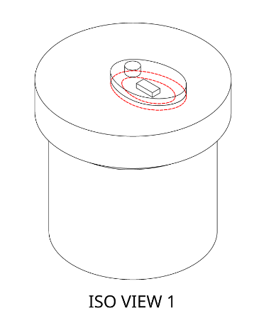
What This Project Taught Me About Complexity and Simplicity
Confirmation Bias
By reflecting on evidence and collaborating with teammates, I recognized my bias for a certain prototype. In the first round of converging, I had a “favourite” design, which was to use a metal straw (with an extended handle for grip) to open the soda can, similar to how a nail can split open wood. If we only considered the screw-on mechanism, the longer lever arm of the extended handle would theoretically greatly reduce the force needed to open the can. However, we were unable to make a metal prototype with a tip that would be sharp enough to split open aluminum. I regarded this as a limitation in prototyping, but my teammates brought up that if the metal straw was sharp enough to split aluminum, it would be sharp enough to hurt people. After several back-and-forth discussions, I realized that I was only defending the metal straw idea because it was one of the first designs we came up with. Upon carefully considering the testing evidence and my teammates' arguments, I changed my idea. I learned through this experience that I am sometimes influenced by confirmation bias; however, reflecting critically about the evidence and discussing with teammates helped me overcome my bias.
Biases tend to lead us to simplify the complexity of the opportunity; considering different (complex) opinions helps us correct this bias. When modelling the opportunity, we always have to simplify; what we leave out in our simplification becomes our bias. However, different people may perceive the situation differently, leading to different simplifications. If we take advantage of this fact and listen to others (who are "little a" authorities in the Perry Model) with open-mindedness, we may be able to have a more holistic (complex) model of reality that contains fewer biases. So, in teamwork, we can reach complexity by considering evidence critically, and by listening to others.
Oversimplified Model
In our early stage design, we had an oversimplified model for how the soda can worked, which led us to pivot our designs completely. We initially assumed that controlling depressurization would remove most of the opening noise, so we focused on reducing the gas hiss. We came up with design candidates that attempted to lengthen the pressure release time to reduce noise peak. However, when testing our design candidate prototypes, we were unable to reduce the noise. We then discovered that can opening noise also came from the aluminum tab tearing the can lid, not just from gas release. This caused us to widen the scope of our design, and include modifications to the soda can as valid designs.
The failure of our early design candidates was caused by oversimplifying the opportunity in our analysis. Our early depressurization model was a useful simplification, based on our assumptions of how a soda can worked, but it ignored the critical physical mechanism of the tearing metal tab. Prototype testing exposed that hidden complexity and forced us to revise our assumptions. This connects directly to the Hoover Dam model: reality is complex, and every engineering model necessarily simplifies that complexity. Since we cannot avoid simplifications, we must test our design against reality through proxy testing or implementation.
CTMFs Used
Morph Chart [Diverging]
Morph chart: A diverging tool that lists different implementations of sub-functions of a design, which are combined to make new designs. Morph charts were helpful for generating designs based on their functions.
When coming up with designs for the soda-can opening device, morph charts helped us generate designs in an organized way by breaking down a complex function into simpler subfunctions. When we did classical brainstorming, we filled a page with design candidates, but the ideas were very unorganized, and some contained overlapping components. Using morph charts helped us recognize the individual subfunctions a design is supposed to accomplish and reduce overlap among components, which organized our diverging.
Connected to complexity/simplicity: Morph Charts break down complex requirements into subfunctions, and break down complex design candidates into simpler components. It simplified the diverging process.
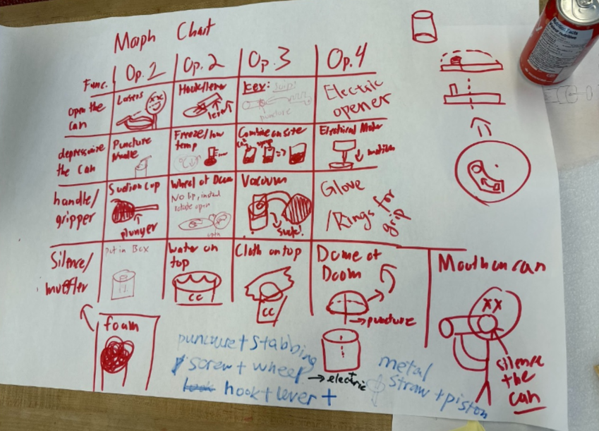
Proxy Testing [Converging] + Prototyping [Representing]
Proxy testing: Using a simpler prototype/ metric to measure the performance of a more complicated model.
Prototyping: A representation of the final design, used to verify the design's effectiveness, and present the design to others.
It's often easier to proxy test and prototype specific parts of a design. To paraphrase from lecture: "Prototype only the unbelievable parts." When testing the soda can opener, the only "unbelievable part" was whether or not the design could effectively reduce the noise caused by opening the soda can. To do this, we made rough prototypes whose function was only to open the can; we did not worry about food safety or grip area while making these prototypes, even though they were also requirements. The prototypes were just functional enough for us to proxy test: we placed a calibrated phone microphone at 1 m (with 30 samples per second to align timestamps) and extracted peak amplitude relative to ambient baseline. This helped us evaluate the noise reduction effect of our design candidates.
Connected to complexity/simplicity: "Prototyping / Testing only the unbelievable parts" helped break down verification into simpler steps. Verification can be complex, since there are often many requirements and evaluation criteria; however, not every prototype / proxy test needs to address all the requirements and evaluation criteria all at once. We can use simple prototypes / proxy tests to build up to a complex claim.
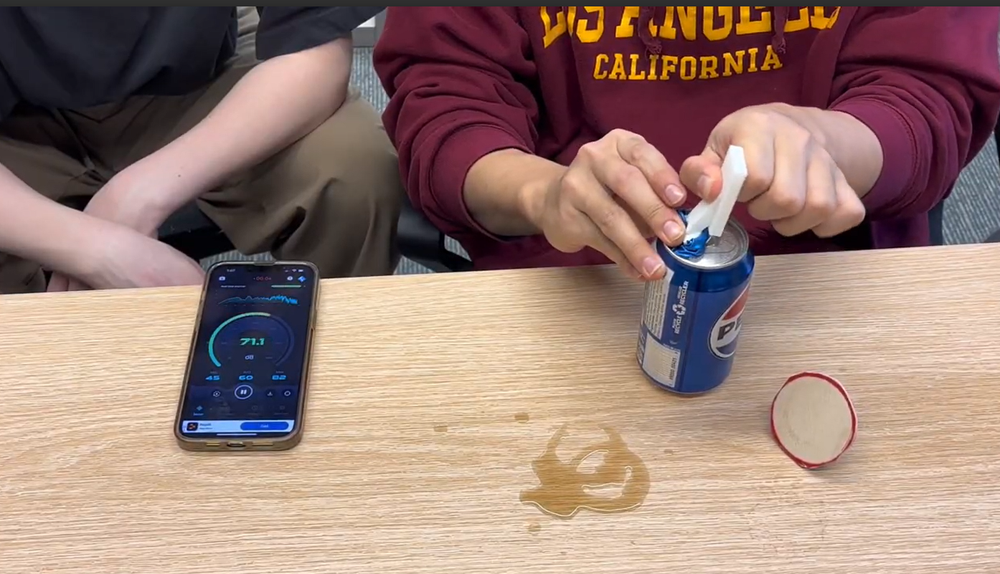
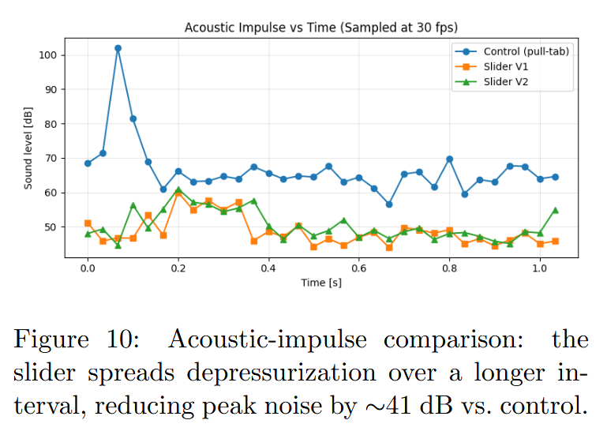
Pugh Chart [Converging/Representing]
Pugh chart: A converging tool used to evaluate designs against verification metrics.
Pugh charts can help eliminate unreasonable designs quickly; however, they may be too simplified for later-stage converging. Our team used Pugh charts to bring our pool of around 20 design candidates down to 4. We did this by ruling out designs that did not satisfy most of the requirements, or were impossible to prototype. However, when comparing the 4 remaining designs, we found measurement matrices more useful. Since we had prototypes for each one of them, putting values in a measurement matrix gave us a sense of how good a design performs with respect to a specific metric, which gave us a more holistic way to evaluate designs. Pugh charts can help us know at a glance how a design performs with a metric compared to the reference, but the "+" or "-" is not graduated. As a result, I found the measurement matrix to be more useful in our project.
Connected to complexity/simplicity: Pugh charts create a clear representation of the "pros and cons" of each design, but they may be too simplified for later-stage converging. To quote from lecture: "Don't sum a Pugh Chart" -- this is because the "+" and "-" can be an oversimplification of how a design performs on a metric. The ultimate decision, when converging, still belongs to the engineer, who is capable of holistically assessing designs and not overly relying on numbers.
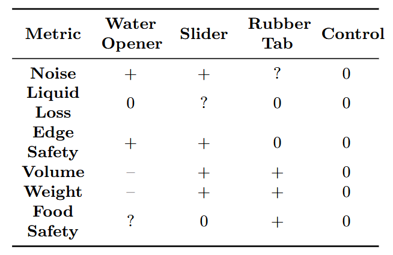
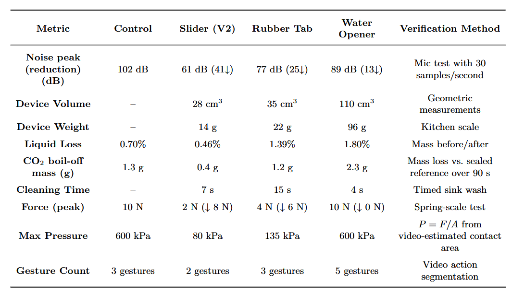
CIV 102 Bridge Project Design Summary
The Trumphant Trapezoid
The Opportunity
The opportunity is to design a matboard bridge that allows for a toy train to go across.
Requirements include: the bridge must bridge the gap between two supports, and be over a certain height.
As well, the bridge can only be constructed from limited matboard and glue, so we need to make good use
of our limited material. Matboard is essentially paper, so its strength is limited as well.
Evaluation criteria include: the maximum train weight the bridge can hold before it fails, and the self-weight of the bridge.
Using CIV102 course knowledge and code, we would need to come up with a design that fulfills the requirements, and optimizes the evaluation criteria.
CIV102 Terminology
Directional terms refer to the bridge placed left to right, in the direction of train travel.
- Deck: the top horizontal surface of the bridge.
- Cross section: the side-view of the bridge; key for structural design.
- Diaphragm / Stiffeners: internal plates that increase stiffness and reduce buckling.
- Centroidal axis: the "center of mass" of the cross section; needs to be optimized to the right height.
- Flexural Compression and Shear: the two types of failure-related actions that we consider in our analysis.
- Splice Connection: the matboard is not long enough to cover the whole span, so we need to connect the two separate pieces of the bridge together. This connection is what we call the splice connection.
Design Report Summary
Through several well-informed iterations, we converged on a trapezoidal cross section that had a factor of safety of 2.53, as predicted by engineering beam theory and thin plate buckling theory. Our bridge is 1265 mm wide. Our bridge, the Trumphant Trapezoid, has a trapezoidal cross section, allowing the centroidal axis to be closer to the top deck, strengthening the bridge against flexural compression given the increased material strength in tension which resides on the bottom. We have two and a half layers of top deck, for the same purpose. Our bridge has 10 unevenly-spaced diaphragms, to efficiently protect the bridge against shear buckling which is highest at the supports.
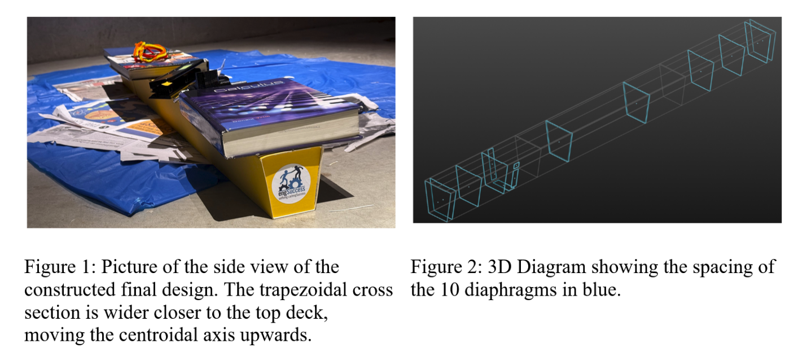
Our Process
Since the opportunity is somewhat well-defined by the course instructors, the framing/diverging/converging process is simplified, compared to Praxis projects. Without additional framing, we began a linear diverging and converging process. We iterated on our bridge cross-section 6 major times, and then planned out the matboard layout, diaphragms, and construction details. Then, we began constructing the bridge (which is also a prototype).
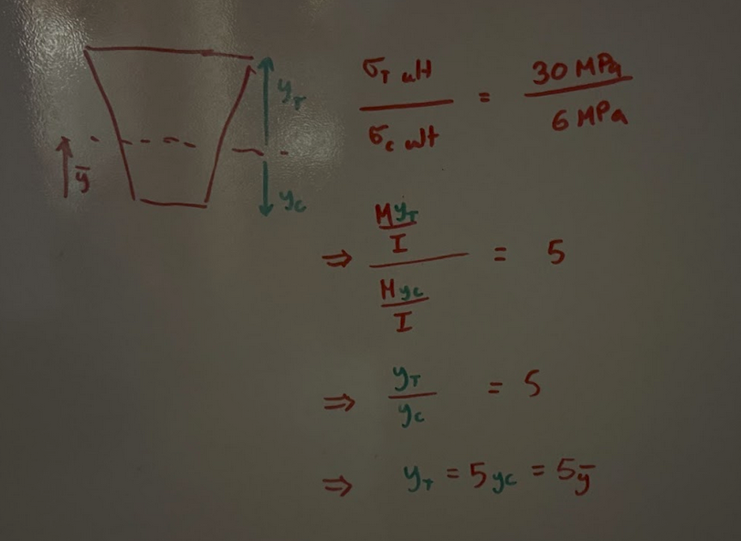
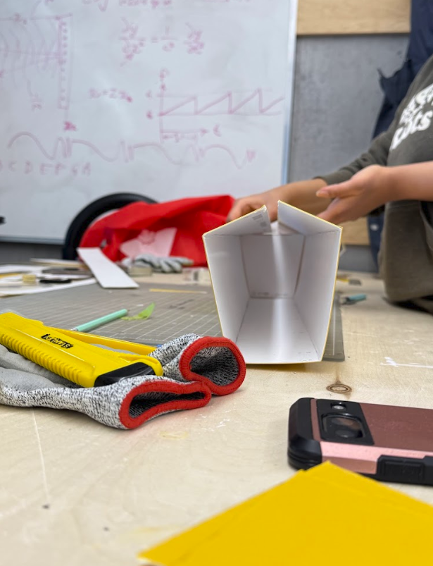
What These Projects Taught Me About Complexity and Simplicity
The bridge project helped me gain a deeper understanding of the Hoover Dam model: real life is complex, so any design we create must simplify real life. This realization came from the fact that our bridge was predicted to hold 868 Newtons, but in reality, our splice connection gave out at around 250 Newtons. In other words, our analysis simplified the splice connection, but this simplification caused the implementation to fail. To connect to the Hoover Dam model: the implementation (building, prototyping) is what connects theory (mathematical models) and real life designs.
The lesson I learned was that in our design process, we must keep the complexity of the original opportunity in mind. For example, the Quebec bridge [3] fell down not because the calculations were wrong, but because the designer failed to account for the self-weight of the bridge. We can correct our simplifications in three ways:
- We develop better models for reality. For example, for our bridge project, we could develop a better model for the splice connection. This wasn't a viable option for us, due to our limited knowledge.
- We use engineering experience. Professor Bentz talks about "experience" as the third rule of engineering: "To find the answer, you must already know the answer" [4]. Engineers nowadays would be able to correct this mistake because they have more experience in building bridges.
- We use prototypes to test implementation. If our bridge project led to an actual bridge instead of a matboard bridge, the splice connection failure of our matboard bridge would show that something was inefficient with our theoretical analysis.
CTMFs Used
Iterations in Diverging/Converging [Diverging/Converging]
Iteration: a "round" of diverging / converging. In this project, it meant that we developed some new designs, picked the best one(s), and verified its performance.
Having many iterations of diverging helps us combine many simple design decisions into one final working design. Since the framing of the opportunity was already defined by course instructors, the design space is more constrained than Praxis-styled open-ended design opportunities, so we didn't need to diverge to generate many design candidates. Instead, we worked in a linear diverging and converging process, where we did calculations to find the weakest structures of the bridge's cross section, and came up with a better design by improving the weakest structures. This linear approach felt much more organized and methodological than the Praxis workflow. Each iteration was relatively simple and consistent, allowing us to build up to the final, more complicated design with smaller, simpler steps. However, this is only possible because the design space is not large. In the future, I will choose the design process based on scope: broader diverging (more breadth) in early ideation, and a more linear process (more depth) when I need a working solution quickly.
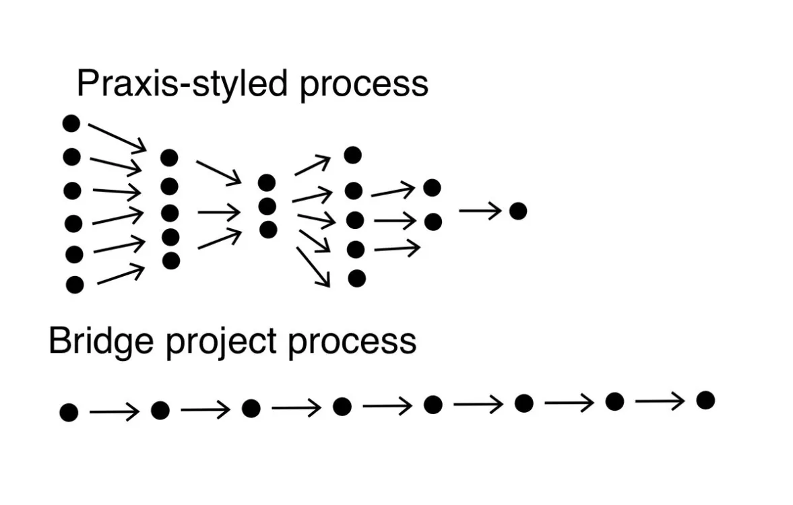
Connected to complexity/simplicity: A broader, more complex design process can be better suited for open-ended opportunities, while a simpler, depth-focused design process can be more suited for more time-constrained, scoped-down opportunities. The complexity and shape of the design process should be appropriate for the framing of the design.
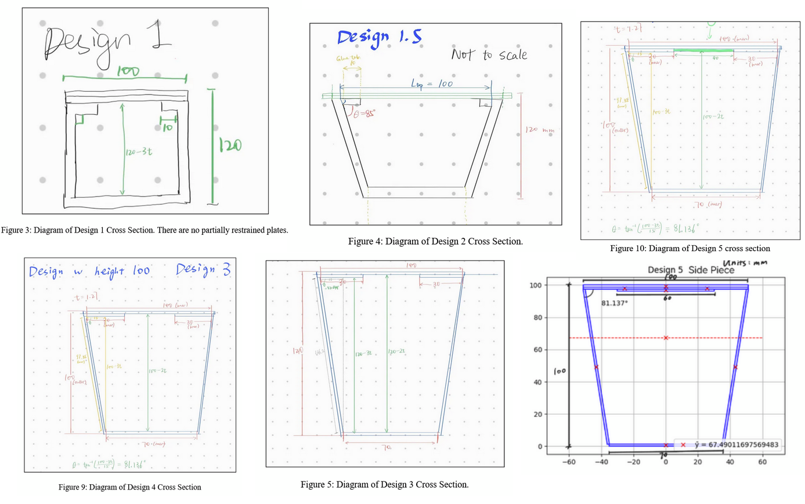
Reference Designs [Diverging]
Reference Design: A design found through secondary research that can provide useful information for our design opportunity.
A reference design helped us develop a unique bridge; however, whether or not the reference design works in practice requires extra verification. When we looked at bridge designs online, we noticed that highway bridges often use a trapezoidal shape to raise the centroidal axis, which helps the bridge resist flexural compression. However, this more creative design made bridge construction harder, since the tilt in the bridge made it hard to press in the glue. From this, I learned that reference designs can be useful, but we also need to consider how the reference design would work in our specific situation. In our case, our team valued getting a strong design that demonstrated our structural design knowledge, but if we were designing for a bridge that would work in practice, we would have focused more on Design for Construction.
Connected to complexity/simplicity: Our trapezoidal design was more complex, but this made construction difficult. This shows that reference designs drawn from secondary research require verification and validation against the specific opportunity that we are working on.
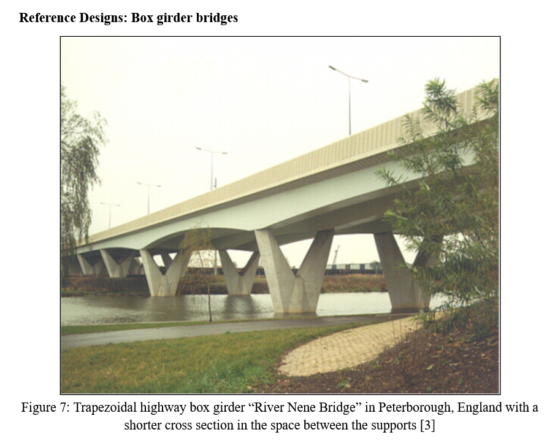
Analysis (Verification Method) [Converging]
Analysis as a verification method: Using mathematical and physical calculations to evaluate how a design would perform against a metric.
Through the disconnect between our theoretical and actual matboard bridge performance, I learned that analysis as a verification method is limited. We originally predicted the bridge to fail at 1143 Newtons, which we lowered to 868 Newtons after accounting for the limitations of our construction. But even with this adjustment, our analysis failed to account for the splice connection, causing unexpected early failure. For an actual bridge design, this would be catastrophic: designs intended for real-world implementation should always go through more rigorous prototyping and different modes of proxy testing to ensure safety. Using rigorous verification is part of the due diligence we would have to do as professional engineers.
Connected to complexity/simplicity: This case showed the tradeoff between simplicity and complexity in verification. Verification that only included analysis fails to consider a critical failure mode. The large gap between predicted and actual failure load demonstrates why real designs need layered verification, not analysis alone.
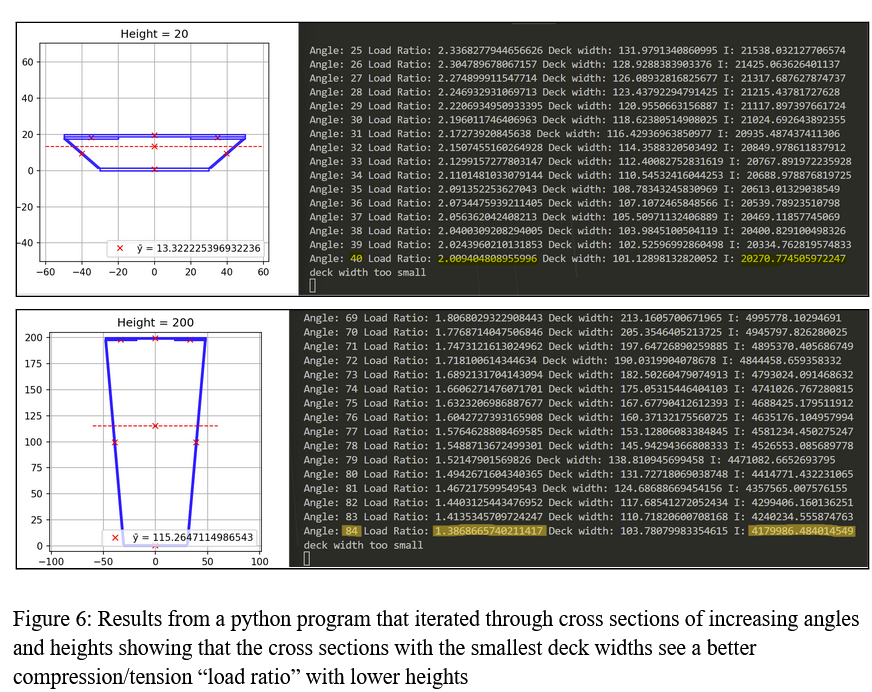
Praxis 2 Design Summary
Clover: Drone Diagnostics
Here is our one-pager:
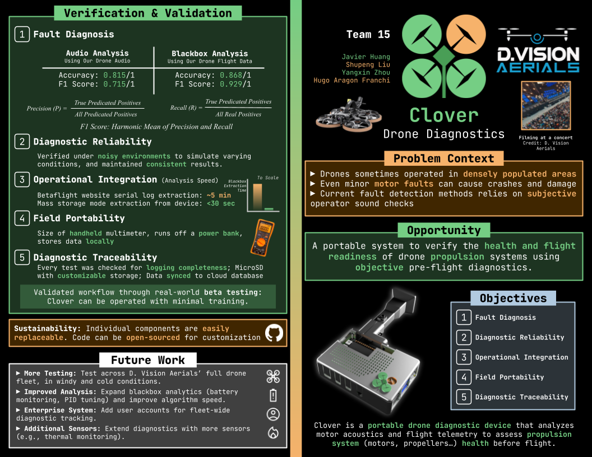
Page 1 introduces the opportunity of developing a pre-flight drone diagnostic check for the FPV drone company, D. Vision Aerials.
Page 4 introduces the verification and validation of our drone diagnostic device, and our next steps.
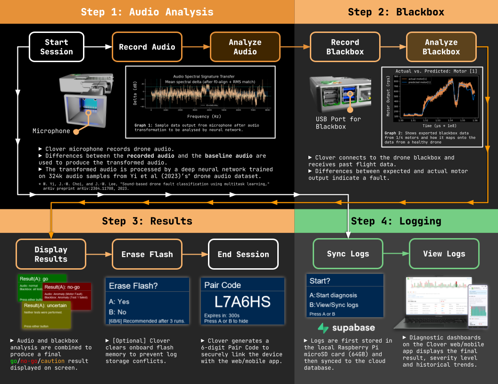
These two pages introduce the 4 steps in the diagnostic process of our device.
What My Process Taught Me About Complexity and Simplicity
Coding and Research
In our Praxis II design, I contributed to the firmware for the Raspberry Pi microcontroller; in the process, I learned that complex code is often built up from simple code; complex algorithms don't always perform better. I was working on extracting data from the drone's onboard storage, and there were two methods: either I search the drone storage for the latest log, or I erase storage after each diagnostic so only new logs are extracted. I initially tried the former approach, which didn't work, since I couldn't find the flight logs I needed. Continuing with the first approach, I spent days using agentic AI, trying to debug the code. I ended up with an extremely complicated algorithm, but it still didn't work. That was when I asked about my approach on an online forum, where I found out that the first approach was actually impossible. I coded up the second approach, and it worked right away. Through this experience, I realized that a working solution may not necessarily be more complex than my original solution; when solutions become too complex, it may be time to go back to simpler approaches/designs that were created in diverging.
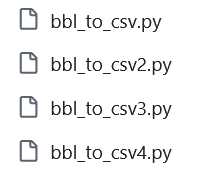
Presentation
Through working on the Beta Release and Showcase poster, I realized that a simpler representation is sometimes more effective. During the Beta Release, we tried to fill our trifold poster with slides, so that we could definitely cover all requirements on the rubric. However, this led our poster to become too cluttered -- assessors were unable to read our poster from a distance, and we had to speak very quickly to cover all slides on our poster. From this, I realized that even if the work we did was complex, overwhelming our representation of work with information is not a good idea. We had to learn to let go, and present only the information that was essential to get our point across. I had to learn to trust that all the hard work we did will come across, even if we could only represent the "tip of the iceberg" of what we had worked on. For our showcase, we kept the advice we had in mind, and decided to focus the poster on a CAD rendering of our design. We did what we could to simplify our poster; however, it was still a bit information-dense compared to other groups' posters. From this, I realized that communicating concisely is something I need to work on.
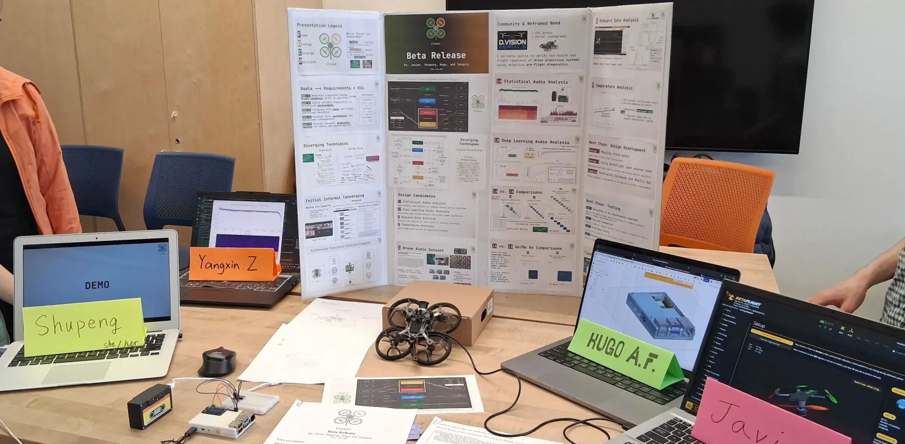
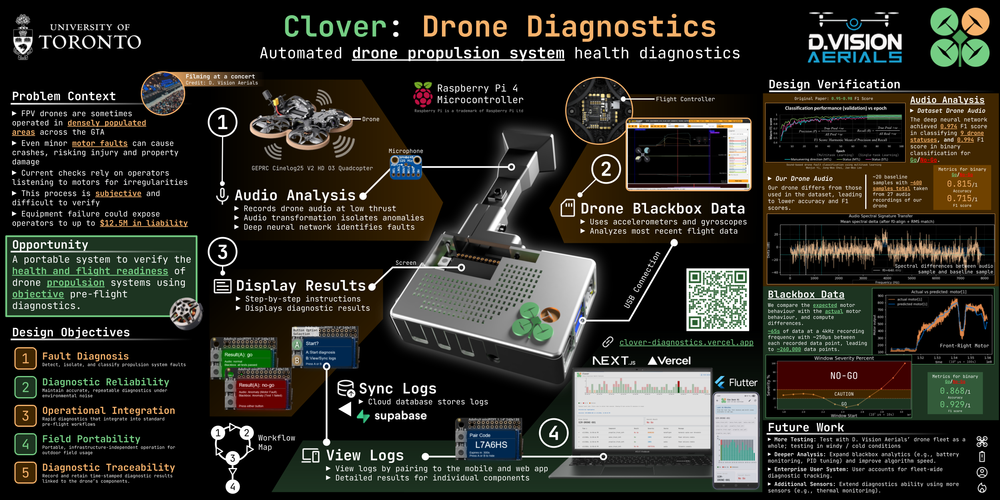
As for writing style: through working with teammates, I realized that it's important to use precise technical terms, but complicated terminology isn't always equivalent to better communication. It's important to use precise terminology to increase one's authority, but using too many technical terms will obscure meaning. This happened when I wrote reports with teammates: due to my limited language ability, I sometimes could not fully understand their writing; so when editing, I missed errors I could have caught. On the other hand, teammates have pointed out that I have been too informal and imprecise with my writing. In the future, I will aim to find a good balance between using precise terminologies (complex language) and clear language (simple language) when writing.
CTMFs Used
Metrics [Framing]
Metric: a quantitative, measurable standard used to verify a design's performance, in order for it to fulfill a specific objective (or requirement, or evaluation criteria). Metrics are essential for framing.
Previously, I thought metrics always had to be graduated, but now I realized that a simple binary metric can sometimes be more effective. For context: the RFP our team worked on focused on optimizing project management at a high school robotics team. Based on secondary research, we adopted agile metrics from online sources, since agile methodologies are often used in industrial project management. These metrics are graduated, but they relate more to validation than verification, which led us to use unnecessarily-complicated metrics that did not suit the opportunity.
In our design project, we reframed the drone diagnostics RFP using simpler metrics. For example, we used a simple accuracy percentage to test our algorithm design, and a pass/fail dimension check for portability. We also reduced unnecessary evaluation criteria. As a result, designing and performing tests for verification became more manageable.
Connection to complexity/simplicity: From my two contrasting experiences in Praxis II, I learned that graduated, complex metrics are not always a strength: although they might capture more aspects of the opportunity, they may also add effort without improving verification. Simpler metrics gave us clearer evidence and a more practical testing process.
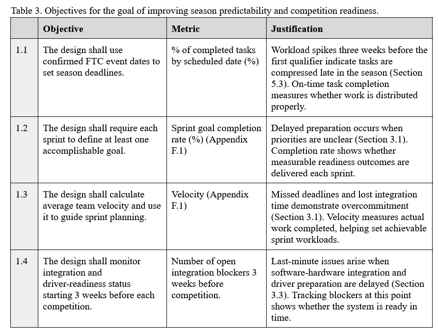
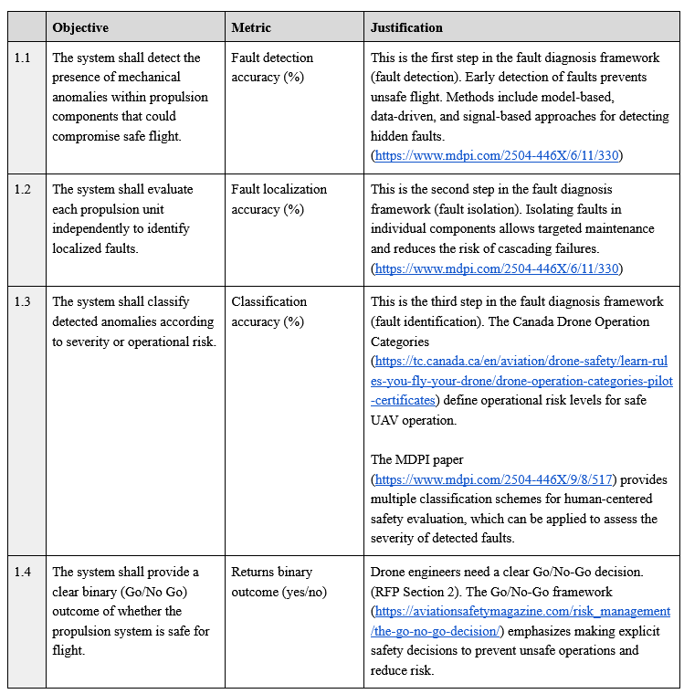
Rescoping [Framing]
Rescoping: changing what could be considered a valid design. Often done when responding to a set of NGOs, or when there are no valid designs or too many valid designs.
We scoped down on the original drone diagnostics RFP, which helped us achieve a more feasible design scope and diverge more easily. Originally, the drone RFP's need was: "A reliable, diagnostic system to verify the integrity of the drone's systems, evaluate the flight-readiness of its core components, and prevent in-flight failure". When we dug into the research, we realized that there were many drone systems (propulsion system, electrical system, etc.); the broad scope would make the design space too unconstrained, making diverging difficult. As well, the goals are mapped from the broad design space, so it would be hard to find a design that satisfies all goals. Because of this, we decided to rescope and focus only on the drone's propulsion system. Our rescoped need is: "A portable system to verify the health and flight readiness of drone propulsion systems using objective pre-flight diagnostics." Accordingly, we removed unnecessary goals relating to battery health. This narrowed scope allowed us to diverge more easily, facilitating our design process.
Connected to complexity/simplicity: Rescoping reduced unnecessary complexity in our project. By narrowing from all drone systems to only the drone propulsion system, we made the design space constrained enough to diverge effectively. This simpler scope led to more manageable goals.
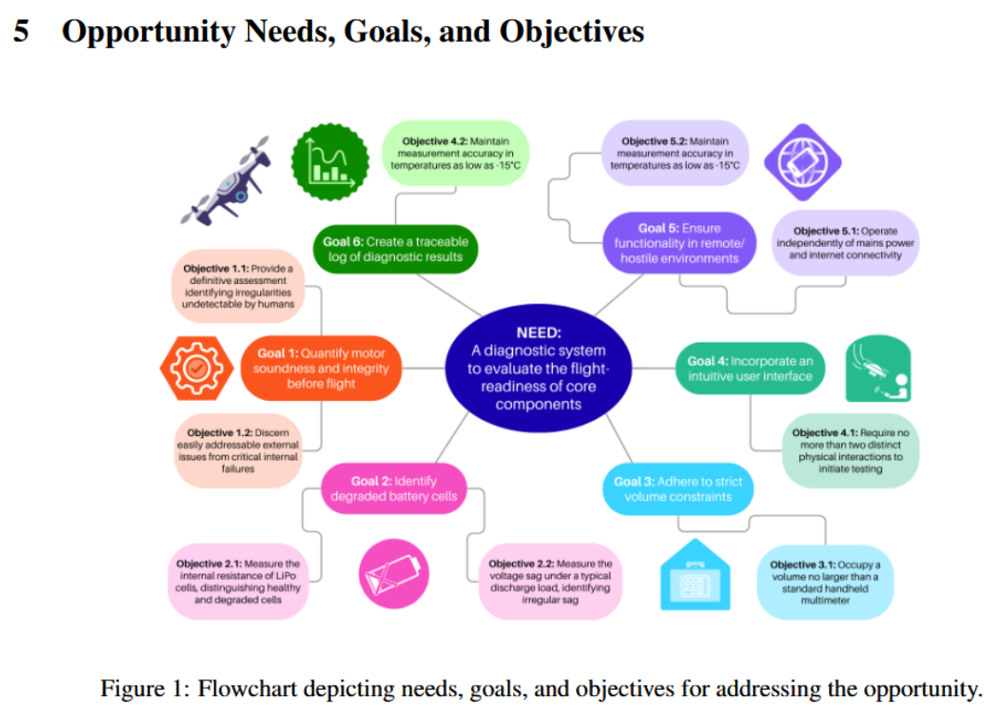
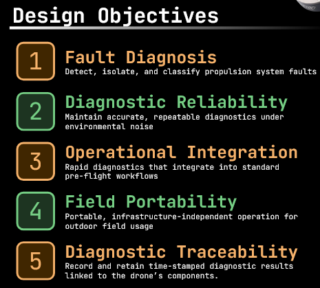
Functional Structural Diagram (FSD) [Representing]
Functional Structural Diagram: a representation of a system / design by decomposing its overall function into smaller sub-functions. Arrows represent the flow of energy (solid arrow), material (empty arrow), or signal (dotted arrow). [5]
Using functional structure diagrams (FSDs) to represent the drone's propulsion system helped us rescope and better diverge. After doing some preliminary research, we were flooded with information about drone fault detection methods, which led to us being confused about which input signals (such as noise or heat) would best represent drone status for our use case. Then, we learned about FSDs in lecture, and we tried drawing an FSD of the drone's propulsion system during Studio. This really helped us organize the unstructured research we did in a clear manner. By using an FSD to analyze the drone, we realized that we could map outputs of the drone propulsion system to various detection methods, which led to many design concepts. Therefore, having a graphical representation of the system inputs and outputs helped us structure our diverging.
Connected to complexity/simplicity: Although FSD did simplify the huge amount of initial research that we did, being able to represent our research in a clear, graphical manner helped us with diverging. This is a case where concise representation initially seemed like a simplification and a constraint on the way we can think about our research, but it actually unlocked our creativity.
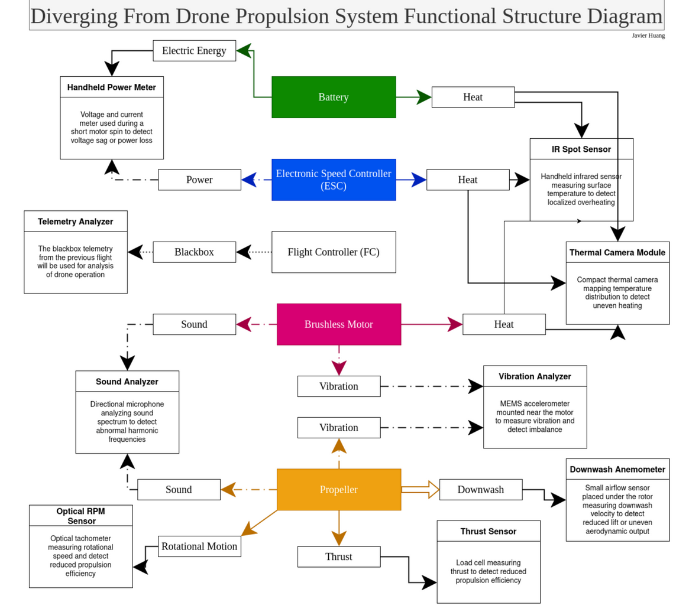